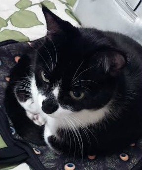

My home is Austin, Texas.
I enjoy learning new things and I'm excited to begin in web development, where there's always something new to learn! I'm currently an apartment locator so I have flexible hours, I get to meet lots of new people and work in all parts of the city.
My other interests are music, fitness, baking and hooping. I also love all animals! I hope to incorporate my individual perspective into designing and coding websites.
I want to become well-versed in all of the currently relevant areas of web development, including but not limited to:
I’d like to utilize these skills by creating fantastic websites that impress both clients and their target audience.
This is my sidekick, McAllister. He did not help in any way with the construction of this website.
